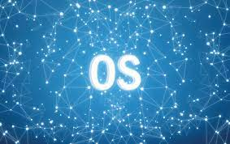

Home Page
Operating System

An operating system (OS) is a collection of software that manages computer hardware resources and provides common services for computer programs. The operating system is a vital component of the system software in a computer system. This tutorial will take you through step by step approach while learning Operating System concepts.
Why to Learn Operating System?
An Operating System (OS) is an interface between a computer user and computer hardware. An operating system is a software which performs all the basic tasks like file management, memory management, process management, handling input and output, and controlling peripheral devices such as disk drives and printers.
Some popular Operating Systems include Linux Operating System, Windows Operating System, VMS, OS/400, AIX, z/OS, etc.
Following are some of important functions of an operating System.
Here's Other Articles...